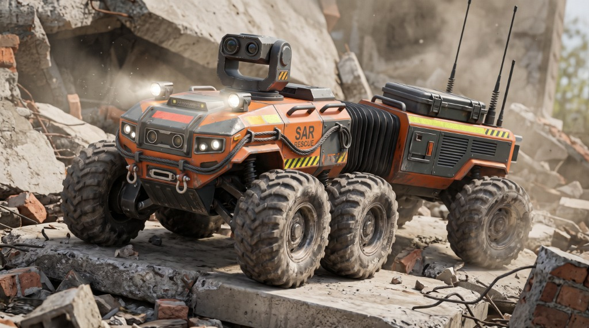

Si algún eje (como el Twist Z o la leva Throttle de la base) no responde en tu versión de Windows/Chrome, hacé clic en "🎯 Detectar" y mové ese control físico en el joystick.
Presioná cualquier botón en tu joystick físico para verificar su respuesta en vivo (se iluminará en verde/naranja):
| Botón 3D Pro | Ubicación Física | Acción en el Rover USAR |
|---|---|---|
| Botón 1 | Gatillo (Índice) | Freno de Emergencia y corte instantáneo a 0% PWM |
| Botón 2 | Pulgar Lateral | Centrar Torreta Pan-Tilt (0°, 0°) / Invertir Marcha en Crucero |
| Botón 3 | Cabezal Sup. Izq. | Alternar cámara 1ra Persona (FPV VR) ↔ 3ra Persona |
| Botón 4 | Cabezal Sup. Der. | Alternar Modo Estabilizado (PID / SAS) ↔ Manual Directo |
| Botón 5 | Cabezal Inf. Izq. | Ciclar potencia de Reflectores LED (Off / Normal / Max USAR) |
| Botón 6 | Cabezal Inf. Der. | Activar / Desactivar escáner láser 3D ToF / Micro-LiDAR |
| Botón 7 | Base (Fila 1 Izq.) | Alternar tracción en vivo: 8x8 Concept → 6x6 USAR → 4WD Cátedra |
| Botón 8 | Base (Fila 1 Der.) | Alternar articulación del fuelle: Activa (Servo) ↔ Pasiva (3D) |
| Botón 9 | Base (Fila 2 Izq.) | Alternar iluminación ambiental: Luz Diurna ↔ Derrumbe Oscuro |
| Botón 10 | Base (Fila 2 Der.) | Mostrar / Ocultar monitor secundario Picture-in-Picture (PiP) |
| Botón 11 | Base (Fila 3 Izq.) | Teletransportar a la siguiente Zona de Ensayo (Zonas 1 → 4) |
| Botón 12 | Base (Fila 3 Der.) | Alternar Modo Throttle (Stick ↔ Crucero) y Nivelar Chasis |
Conectá el celular a la misma red Wi-Fi (o Hotspot de la PC) y escribí cualquiera de estas direcciones en el navegador del teléfono (Chrome / Safari):
💡 Asegurate de haber iniciado el simulador desde INICIAR_SIMULADOR.bat (o ejecutando python wifi_vr_server.py) para habilitar el puerto local 8090.

Evolución de Plataforma Educativa a Rover USAR (Grupo 4 - UAI): Este Gemelo Digital está integrado nativamente con el joystick Logitech Extreme 3D Pro mediante Web Gamepad API, implementando el chasis bi-modular articulado con fuelle central (3 grados de libertad: Yaw de dirección quebrada, Pitch de inclinación y Roll de torsión sobre escombros), torreta Pan-Tilt 2-DoF en el POV Hat y telemetría dual HC-SR04 + Óptico ToF / Micro-LiDAR.
| Logitech Extreme 3D Pro | Teclado | Función en el Rover USAR |
|---|---|---|
| Stick Eje Y (Adelante/Atrás) | W / S | Aceleración y Reversa proporcional con curva exponencial |
| Palanca Throttle Base (+/-) | R / F | Regulador de Potencia PWM (o Gases Continuos en Modo Crucero) |
| Stick Eje X (Izq/Der) | A / D | Dirección articulada del fuelle central + asistencia diferencial |
| Twist Z (Rotación Puño) | Q / E | Paneo horizontal rápido de Torreta + asistencia de giro |
| POV Hat 8-Vías (Cabezal) | ↑ ↓ ← → | Mover Torreta Pan-Tilt 2-DoF (Visión activa desacoplada) |
| Gatillo (Botón 1) | Espacio | Freno de emergencia y corte instantáneo a 0% PWM |
| Botón 2 (Pulgar) | X o C | Centrar Torreta Pan-Tilt al frente del chasis (0°, 0°) |
| Botón 3 / Botón 4 | V / G | Alternar Cámara FPV ↔ 3ra Persona / Alternar SAS PID |
| Botón 5 / Botón 6 | L / T | Ciclar Reflectores LED / Escáner Láser 3D ToF Micro-LiDAR |
| Botones Base 7 a 12 | M N P 1-4 | Tracción (B7), Fuelle (B8), Noche (B9), PiP (B10), Zonas (B11), Modo (B12) |